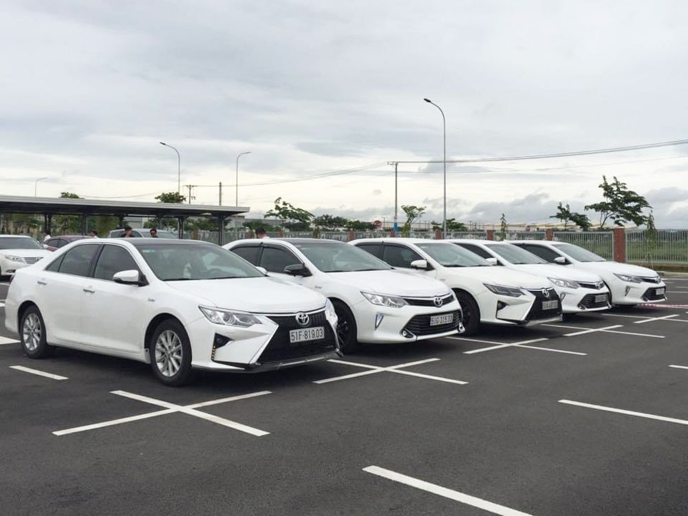

CHO THUÊ XE Ô TÔ DU LỊCH 4 CHỖ GIÁ RẺ TẠI TPHCM
Cho thuê xe ô tô du lịch 4 chỗ đang ngày càng phổ biến hiện nay. Đặc biệt là khi nhu cầu di chuyển của mọi người ngày càng tăng cao. Trước tình hình đó, việc tìm kiếm một địa chỉ cho thuê xe 4 chỗ an toàn và tiện lợi đang là mong muốn của nhiều người. Vậy hiện nay, địa chỉ cho thuê xe 4 chỗ có người lái nào tại TPHCM đang được đánh giá là uy tín và đáng tin? Hãy cùng khám phá qua bài viết dưới đây.
1. Bảng giá thuê xe ô tô du lịch 4 chỗ giá rẻ tại TPHCM
Hiện nay, số lượng nhà xe cho thuê xe 4 chỗ ngày càng nhiều. Khi cần thuê xe 4 chỗ có tài xế, bạn cần nắm rõ bảng giá. Điều này sẽ giúp bạn thuê được chiếc xe ưng ý với mức giá phải chăng nhất. Vậy thuê ô tô du lịch 4 chỗ giá rẻ tại TPHCM đang có mức giá thế nào?
1.1 Bảng giá xe cho thuê xe 4 chỗ có người lái
Khác với thuê xe không người lái, thuê xe 4 chỗ có tài xế sẽ có mức giá cao hơn. Đặc biệt, mức giá sẽ phụ thuộc vào quãng đường di chuyển của bạn hoặc thời gian thuê xe. Địa điểm di chuyển càng xa thì mức giá sẽ càng cao. Tương tự vậy, thời gian thuê càng nhiều thì mức giá cũng sẽ cao hơn. Đồng thời, thứ 7 và chủ nhật, ngày lễ, Tết cũng sẽ có mức giá cao hơn so với ngày thường.
1.2 Bảng giá cho thuê xe du lịch 4 chỗ 1 ngày
Thay vì thuê xe 4 chỗ du lịch theo km, thuê theo giờ cũng là lựa chọn của nhiều người hiện nay. Tương tự với thuê xe theo km, thuê theo giờ cũng tỉ lệ thuận với mức giá của xe. Cụ thể, thời gian thuê càng dài thì mức giá sẽ càng cao và ngược lại.
1.3 Bảng giá cho thuê xe ô tô 4 chỗ 1 tháng
Khác với mức giá thuê 1 ngày, giá thuê xe 4 chỗ có lái có tháng sẽ có một mức giá chung. Thuê liên tục 1 tháng sẽ rẻ hơn là thuê từng ngày. Cụ thể, để thuê xe ô tô 4 chỗ 1 tháng, các bên cần có hợp đồng cụ thể. Tùy từng loại xe mà mức giá sẽ cao thấp khác nhau. Xe càng hiện đại và cao cấp thì mức giá sẽ cao hơn. Đồng thời, tùy thuộc vào từng nhà xe mà mức giá có sự khác biệt.
2. Cho thuê xe du lịch 4 chỗ có tài xế lái tại TPHCM
2.1 Cho thuê xe du lịch 4 chỗ tại TPHCM
2.1.1 Thuê xe 4 chỗ quận 7
Nhu cầu thuê xe 4 chỗ có tài xế tại TPHCM đang ngày càng tăng cao. Đặc biệt là tại khu vực quận 7. Hiện nay, tình hình giao thông tại quận 7 đang là mối lo lắng của nhiều người. Tình hình tắc đường thường xuyên diễn ra ở khu vực đường Nguyễn Hữu Thọ. Tình trạng ùn tắc thường diễn ra ở những khu vực trung tâm trong giờ cao điểm.
Nhiều người thường lo lắng, liệu việc thuê xe 4 chỗ có là sự lựa chọn hợp lý hay không? Liệu nhà xe có thể giao xe đúng giờ hay không? Mặc dù tình trạng tắc đường thường xuyên diễn ra, nhưng việc sử dụng xe 4 chỗ lại là sự lựa chọn hợp lý. Điều quan trọng là bạn cần tìm những nhà xe uy tín.
2.1.2 Thuê xe 4 chỗ quận 9
Bên cạnh quận 7, quận 9 cũng là khu vực có nhu cầu thuê xe 4 chỗ cao. So với quận 7, tình hình giao thông tại quận 9 được đánh giá là ít ùn tắc hơn. Tuy nhiên, đây lại là khu vực được biết tới là nơi có tỷ lệ tai nạn giao thông tăng cao. Vì thế, nhu cầu thuê xe 4 chỗ của mọi người tại đây cao hơn. Việc di chuyển bằng ô tô được đánh giá là an toàn và giảm thiểu tối đa tình trạng tai nạn giao thông.
2.1.3 Thuê xe 4 chỗ Tân Phú
Quận Tân Phú được đánh giá là khu vực chứa nhiều địa điểm thăm quan nổi tiếng. Nổi bật trong số đó là các di tích như địa đạo Phú Thọ Hoà hay đình Tân Thới… Chính vì thế, nhu cầu thuê xe ô tô 4 chỗ giá rẻ tại đây cũng cao hơn. Mọi người thường thuê để di chuyển đến các địa điểm du lịch thăm quan, hoặc ngược lại. Do đó, đây luôn là khu vực có nhu cầu di chuyển cao.
3. Cho thuê xe ô tô 4 chỗ uy tín ở các quận, huyện TPHCM
3.1 Cho thuê xe du lịch 4 chỗ theo tháng chuyên nghiệp
Cho thuê xe ô tô du lịch 4 chỗ tại TPHCM đang ngày càng phổ biến và đa dạng cả về mặt hình thức và giá cả. Một trong những hình thức được nhiều người lựa chọn hiện nay đó là thuê xe ô tô 4 chỗ có tài xế. Đặc biệt là hình thức cho thuê theo tháng. Khi thuê theo tháng, bạn có thể tiết kiệm được nhiều chi phí. Đồng thời, giúp bạn chủ động hơn trong công việc.
Thuê theo tháng thường được lựa chọn cho những chuyến đi du lịch xa, hoặc sử dụng để kinh doanh… Chính vì thế, người thuê thường mong muốn tìm kiếm cho mình cơ sở uy tín và đáng tin. Bởi chất lượng và độ an toàn của chiếc xe luôn là vấn đề được quan tâm hàng đầu. Các cơ sở càng uy tín thì chất lượng của chiếc xe càng cao. Do đó, độ an toàn cũng sẽ cao hơn.
Liên hệ báo giá